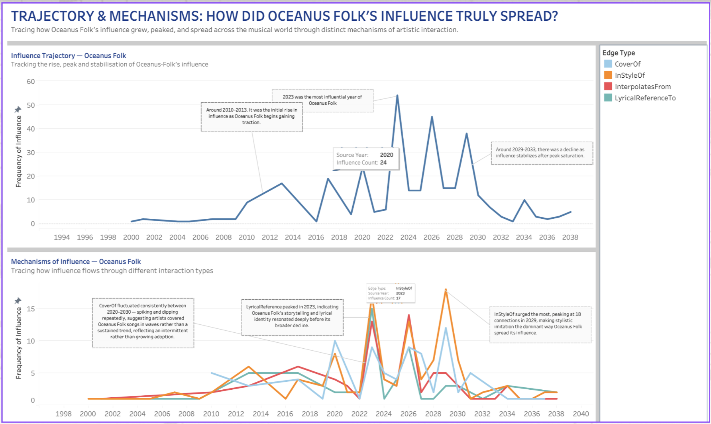
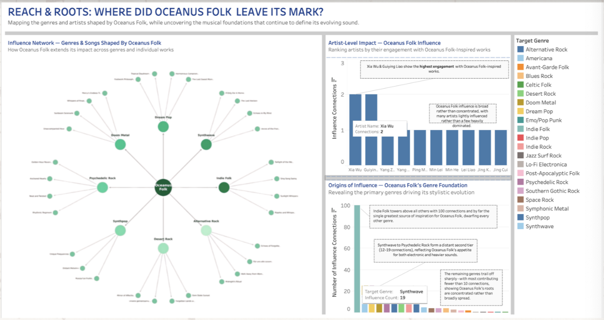
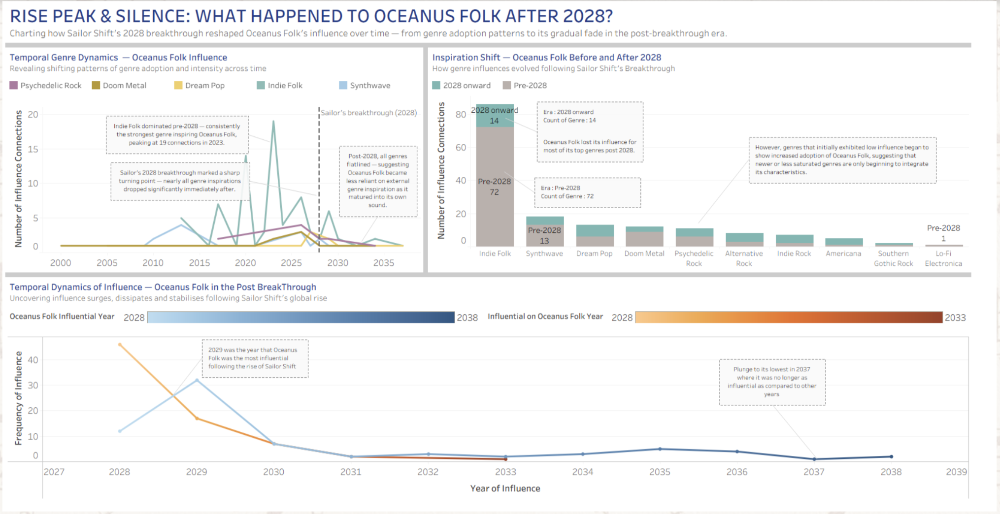

Question 2 Analysis
Oceanus Folk Influence Spread

Influence Trajectory Line Chart
How did Oceanus Folk’s influence evolve over time, and what factors might explain its rise, peak, and eventual decline?
The Influence trajectory line chart tracks how Oceanus Folk rises, peaks, and eventually settles into a more stable phase over time. From the mid-1990s up until around 2010, the line is almost flat, which suggests the genre either hadn’t really formed yet or was sitting in small, niche spaces without much visibility. Around 2010–2014, there’s a clear lift, pointing to early adoption—probably when a few artists or scenes started pushing the sound into wider circulation.
After that, things get uneven. The dips and spikes from 2017 onward feel like moments of sudden attention—maybe viral releases, standout albums, or influential artists briefly pulling the genre into the spotlight. The peak around 2023 stands out as the moment it fully breaks through. After that, the drop makes sense: once something becomes widely used, it stops feeling fresh. By the 2030s, the line flattened again, but not to zero but more likely the genre has settled into a niche, still present but no longer leading trends.
Mechanisms of Influence Line Chart
Through which mechanisms did Oceanus Folk spread its influence, and how did the importance of these mechanisms change over time?
The mechanism of influence line chart explains how that influence actually spread. Early on, all four mechanisms are pretty quiet, reinforcing that initial adoption required deliberate discovery rather than passive exposure. As things pick up after 2010, more activities can be seen across the board, but each pathway behaves a bit differently.“CoverOf” stays relatively steady, which suggests people were consistently engaging with existing Oceanus Folk tracks rather than constantly reinventing them. It’s less explosive, more sustained. “LyricalReferenceTo” builds more gradually and peaks around 2023, which feels important—it shows that the themes or ideas behind the genre were resonating, not just the sound. The most noticeable change is in “InStyleOf,” which spikes much later and more sharply. This probably occurred due to the genre becoming more familiar enough that artists can imitate it without referencing specific songs. At that point, it’s not just influence—it’s identity. “InterpolatesFrom” comes and goes in bursts, suggesting selective borrowing rather than widespread use. After the late 2020s, everything tapers off, which lines up with the idea of saturation.
Overall Dashboard Analysis
Oceanus Folk’s success was driven less by a single breakthrough and more by a gradual cultural buildup that culminated in a tipping point. Its rise reflects wider trends like easier music discovery and a shift toward more organic, authentic sounds. The peak around 2023 likely represents a moment where multiple factors converged such as audience demand, artist experimentation, and algorithmic amplification. However, those same factors also led to its decline, especially the heavy imitation “InStyleOf” caused saturation, making the genre feel less unique and imapctful over time, prompting artists and listeners to move on. Despite all these occurrences, Oceanus Folk didn’t really disappear completely from the map but it transitioned into a background influence. Its continued presence in covers, references, and stylistic echoes shows it achieved something more lasting than trend status.
Oceanus Folk’s Footprint

Influence Network of Genres and Songs Chart
How does Oceanus Folk spread its influence across different genres and songs, and why does it have a stronger impact on some genres than others?
The Influence Network Chart shows how Oceanus Folk spreads outward into other genres and individual works, with Oceanus Folk sitting at the center of the network. A genre that stands out most is Indie Folk which has noticeably more links, suggesting that it absorbs a larger share of the influence. This likely happened because Oceanus Folk shares similar acoustic styles and themes with Indie Folk, making it easier for its elements to spread and blend into that genre. Other genres, like Synthwave or Dream Pop are influenced by Oceanus Folk but only in small ways over overall style. There’s also a clear mix of larger and smaller nodes. The smaller nodes, representing individual songs, appear more frequently, which suggests that influence happens gradually at the track level rather than through major genre-wide shifts. Instead of reshaping entire genres, Oceanus Folk seeps into specific works, accumulating influence over time, suggesting broader reach but uneven impact. The genre spreads widely, but it tends to take hold more strongly in genres that already align with its sound, rather than transforming completely different ones.
Artist Level Impact Bar Chart
How is Oceanus Folk’s influence distributed among artists, and what does this suggest about whether the genre is driven by key individuals or collective adoption?
The artist level impact chart looks at how individual artists engage with Oceanus Folk. The most noticeable thing is how closely grouped the values are. Most artists sit within a narrow range, with only small differences between them, and even the highest values don’t stand far above the rest. This shows that there isn’t a single dominant artist pushing the genre forward. Instead, influence is spread across many artists, each contributing at a similar level. This probably happened due to the genre being widely accepted, rather than being driven by a few key trendsetters. It suggests that Oceanus Folk isn’t tied to specific names, but instead exists as a shared pool of ideas that many artists independently adopt similar stylistic elements which explains how the genre becomes recognizable over time.
Origins of Influence Bar Chart
Which genres contribute most to the formation of Oceanus Folk, and what does this reveal about its core identity and stylistic foundation?
The Origin of Influence Chart flips the perspective and looks at where Oceanus Folk comes from, and here the pattern is much more concentrated. Indie Folk clearly dominates with far more connections than any other genre. This suggests Oceanus Folk is built on a strong core foundation, likely inheriting its acoustic textures, storytelling style, and overall aesthetic from Indie Folk. However, genres like Synthwave or Psychedelic Rock still show some influence to Oceanus Folk, but at much lower levels. These influences probably contribute specific elements, such as atmospheric layers or experimental sounds, rather than shaping the genre’s core identity. The sharp drop-off from the genre Indie Folk shows that most of the genre’s defining characteristics come from a single primary source, with only limited external input. In contrast to the first chart, Oceanus Folk draws from a narrow base but spreads outward much more widely, suggesting it takes a clear, established sound and adapts it across different contexts, rather than constantly reinventing itself from multiple influences.
Overall Dashboard Analysis
Oceanus Folk comes across as a genre with a strong foundation but flexible reach. It starts from a clearly defined base, mainly Indie Folk, that then expands outward into a range of related genres and artists. This combination of a stable core and adaptable edges makes it easy to spread without losing its identity. Oceanus Folk also stands out by how evenly that influence is distributed. Instead of being driven by a few major artists, it spreads across many, which makes it feel less like a short-lived trend and more like a shared creative approach. That kind of diffusion tends to produce steady, organic growth rather than sudden spikes. However, since many artists adopt similar elements, the genre risks becoming saturated. Once the sound becomes too familiar, it starts to lose its distinctiveness. Even so, the wide spread of influence suggests it doesn’t disappear—it simply blends into the background, continuing to shape music in more subtle and lasting ways.
Oceanus Folk Influence Spread

Temporal Genre Dynamics Line Chart:
How do the genres influencing Oceanus Folk change over time, and what does this suggest about its development before and after the 2028 breakthrough?
The Temporal Genre Dynamics Line Chart depicts how genres that once influenced Oceanus Folk changed over time, especially around the 2028 breakthrough. Before 2028, Indie Folk clearly dominated, consistently showing the highest number of influence connections and peaking around 2023. This suggests that Oceanus Folk was heavily reliant on Indie Folk as its core inspiration during its early and peak phases. Other genres like Synthwave and Dream Pop appear, but at much lower levels, indicating they played supporting roles rather than shaping the genre. However, after 2028, there is a noticeable drop across all genres. The lines flatten significantly, showing that Oceanus Folk becomes less dependent on external genre influences. This likely reflects a shift where the genre matures and develops its own identity instead of drawing heavily from others. However, it can also suggest a decline in innovation, as fewer new influences are being integrated. Overall, the chart highlights a transition from strong external inspiration to a more self-contained but less dynamic phase.
Inspiration Shift Stacked Bar Chart
How genre influences evolved following Sailor Shift’s Breakthrough?
Inspiration Shift Stacked Bar Chart compares how different genres influence Oceanus Folk before and after 2028, revealing a clear structural shift. Before 2028, Indie Folk dominated by a large margin, with significantly higher connections than any other genre. This reinforces the idea that Oceanus Folk’s identity was strongly rooted in Indie Folk during its rise. However, after 2028, the overall number of connections drops sharply across nearly all genres. Even Indie Folk sees a major decline, suggesting that its influence weakens significantly in the post-breakthrough period. While some genres show slight increases in adoption after 2028, these are relatively small and do not compensate for the overall decline. This suggests that Oceanus Folk loses much of its external inspiration after its peak. Rather than continuously evolving through new influences, it becomes more static. The chart points to a post-peak phase where the genre is no longer actively shaped by a wide range of influences, which may contribute to its reduced impact over time.
Temporal Dynamics of Influence Line Chart
How does Oceanus Folk’s influence change after 2028, and what explains the rise and decline in its popularity over time?
The Temporal Dynamics of Influence Line Chart shows how Oceanus Folk’s influence changes after 2028. The most noticeable feature is the sharp rise around 2029, where the genre reaches its highest level of influence after Sailor Shift’s breakthrough. This likely happens because Sailor Shift brought strong attention to the genre, introducing it to a wider audience and making more artists and listeners engage with it. As a result, Oceanus Folk suddenly became popular around that time, as more people started noticing and engaging with it. However, this increase in popularity does not last long. After 2029, the influence drops rapidly, reaching very low levels by 2031. This suggests that the attention it gained was only temporary. Afterwards, the trend remains relatively flat, with only minor fluctuations. A slight rise appears again around 2035, but it is not significant enough to indicate a real recovery. By 2037, the influence reaches one of its lowest points, showing that Oceanus Folk is no longer as impactful as it once was. Overall, the chart reflects a typical post-peak pattern: a brief spike following success, followed by a steady decline and eventual stabilization at low levels.
Overall Dashboard Analysis
Oceanus Folk undergoes a clear shift after 2028, moving from a highly influenced and dynamic genre into a more stable but declining phase. Before the breakthrough, it relies heavily on Indie Folk and other genres for inspiration, which helps drive its growth and development. 2028 was the breakthrough turning point that briefly boosted its influence and visibility but sadly, it was short-lived. External influences and overall impact declined significantly and even the genre as a whole became less connected to other influences and less active in shaping the wider music landscape. With all the data set in place, it has come to a conclusion that Oceanus Folk has reached a point of maturity or saturation, where it no longer evolves as rapidly. Instead of continuing to grow, it settles into a quieter phase. While it does not disappear completely, its role shifts from being a leading influence to a more background presence in the music ecosystem.